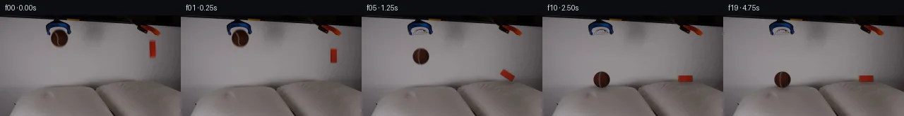

![首帧]()

快照 00
2026-11-06T11:38:09.567717+00:00像素候选变化代码 +344/−0inspection 更新
pixels 707b8db78cdbcb1b · code ab07d7a94c95a59c
查看本次 generate.py 真实 diff
--- previous/generate.py +++ current/generate.py @@ -0,0 +1,344 @@ +"""Generate the Physics-IQ continuation for the grabber-release scene. + +The first frame is the provided plate. The two tools stay locked off; the +brown tennis ball is released from the blue claw and falls onto the left +pillow, while the orange block (already moving in the plate) falls onto the +right pillow and tips over. Everything is drawn locally with numpy/OpenCV. +""" +from pathlib import Path + +import cv2 +import numpy as np +from PIL import Image + +import artifact_io + +W, H, N, FPS = 256, 144, 20, 4 +S = 4 # supersampling factor for object sprites + +BALL_R = 11.5 +BALL_HELD = (84.0, 34.5) +BALL_RELEASE_T = 2.0 +BALL_Y0 = 36.5 +BALL_V0 = 3.5 +BALL_G = 2.6 +BALL_REST_Y = 92.0 + +BLOCK_W, BLOCK_H = 9.0, 20.0 +BLOCK_X = 216.5 +BLOCK_Y0 = 48.0 +BLOCK_V0 = 8.0 +BLOCK_G = 3.5 +BLOCK_PIVOT = (212.5, 94.5) + + +# --------------------------------------------------------------------------- +# static background plate +# --------------------------------------------------------------------------- +def build_plate(first_frame): + """Remove the two objects from the provided frame by row interpolation.""" + a = first_frame.astype(np.float32) + h, w, _ = a.shape + yy, xx = np.mgrid[0:h, 0:w] + r, g, b = a[:, :, 0], a[:, :, 1], a[:, :, 2] + blue = (b - r > 12) & (b > 30) + bright = a.mean(2) + neutral = (a.max(2) - a.min(2)) < 22 + + dist_ball = np.sqrt((xx - 84.5) ** 2 + (yy - 34.5) ** 2) + disk = dist_ball <= 13.2 + brown = (r - g > 12) & (r - b > 18) & (r > 15) & (r < 125) + ball_mask = disk & (brown | ((yy >= 43) & (bright > 55))) + ball_mask = cv2.dilate(ball_mask.astype(np.uint8), np.ones((3, 3), np.uint8)) > 0 + + block_box = (xx >= 206) & (xx <= 225) & (yy >= 31) & (yy <= 65) + block_mask = block_box & (r - g > 7) & (r - b > 7) & (r > 55) & (~blue) + block_mask = cv2.dilate(block_mask.astype(np.uint8), np.ones((3, 3), np.uint8)) > 0 + + obj = ball_mask | block_mask + valid = ( + (~obj) + & (~blue) + & neutral + & (bright > 72) + & (yy <= 97) + & (dist_ball > 16) + & ~((xx >= 203) & (xx <= 228) & (yy >= 28) & (yy <= 68)) + & ~((yy < 10) & (xx > 88)) + & ~((xx >= 190) & (xx <= 232) & (yy <= 32)) + ) + + bg = a.copy() + rng = np.random.default_rng(11) + for y in range(h): + xs = np.where(obj[y])[0] + if len(xs) == 0: + continue + for span in np.split(xs, np.where(np.diff(xs) > 1)[0] + 1): + xa, xb = span.min(), span.max() + left = np.where(valid[y, :xa])[0] + right = np.where(valid[y, xb + 1:])[0] + xl = left.max() if len(left) else None + xr = (right.min() + xb + 1) if len(right) else None + if xl is not None and xr is not None: + t = (np.arange(xa, xb + 1) - xl) / (xr - xl) + col = a[y, xl] * (1 - t[:, None]) + a[y, xr] * t[:, None] + elif xl is not None: + col = np.repeat(a[y, xl][None, :], xb - xa + 1, 0) … diff truncated; 257 more lines …